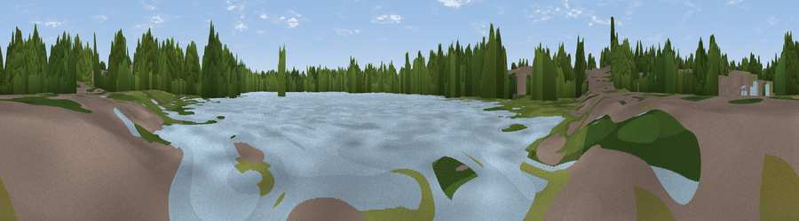

Viewpoint near Fleet
#44809 in England · top 77% of its area beats it · near FleetThe view, rendered

A 360° render of this exact spot computed from the terrain model, tree cover and land cover — summer colours, afternoon light, calibrated against photographs of famous viewpoints. Real trees, hedges and buildings will differ in detail.
The panorama
Grey silhouette: terrain skyline in each direction (720 bearings, Earth curvature and refraction included). Dashed green: skyline with trees (+15 m) and buildings (+8 m) as obstacles. Blue strip: how far the ground is visible on each bearing.
Where the view opens
Wedge length = distance to the farthest visible ground on that bearing (vegetation-aware). Rings at 10, 25 and 50 km.
What fills the view
55% woodland · 19% water · 16% built-up · 10% grassland
Angular shares of the visible panorama (visual magnitude), not map area. Landscape diversity 0.52 (0–1 Shannon).
Key numbers
More beautiful places nearby
The staircase of upgrades: each row has a higher view potential than everything closer. Driving times are estimates from straight-line distance, calibrated against real road routing — check an actual route before setting out.
| Place | Direction | Drive | Score |
|---|---|---|---|
| The Mounts | W · 3 km | ~6 min | 27.0 |
| Mount Zion | NW · 4 km | ~8 min | 30.6 |
| Viewpoint near Hawley | NE · 5 km | ~10 min | 39.7 |
| Viewpoint near Ewshot | S · 5 km | ~11 min | 51.4 |
| Viewpoint near Upper Hale | SSE · 5 km | ~12 min | 58.3 |
| Horsedown Common | SW · 9 km | ~18 min | 59.0 |
| Viewpoint near Puttenham | SE · 12 km | ~22 min | 62.0 |
| Viewpoint near Wanborough | ESE · 14 km | ~26 min | 65.5 |
51.29062, -0.82724 · source: osm viewpoint · position refined by local search. Computed location — check access rights before visiting.